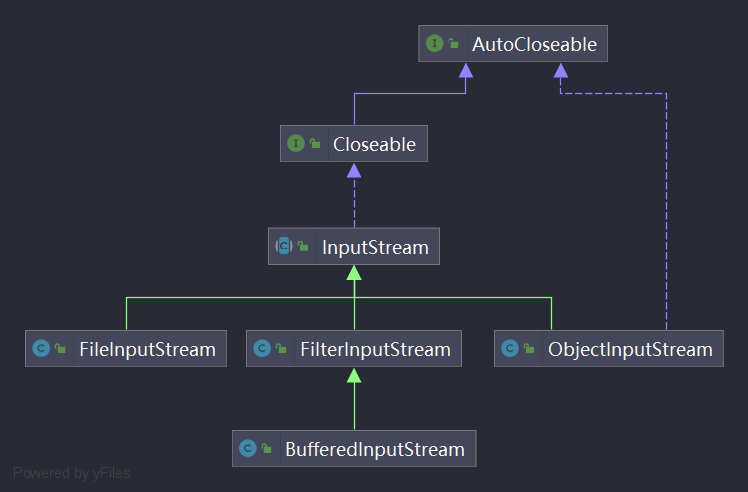

Java IO流 1. 什么是文件？ 从编程的角度看，文件就是保存数据的载体。可以是文字，图片，音频，视频…
2. 文件流 文件再程序中以流的形式来操作。流 输入流 输出流
3. 常用的文件操作
3.1 常用的创建文件方法 File(String pathname)
1 2 3 4 5 6 7 8 9 10 11 12 13 14 @Test public void createTest01 () String pathname = "classpath://../resource/file01/test01.txt" ; File file = new File(pathname); try { file.createNewFile(); System.out.println("文件创建成功！" ); } catch (IOException e) { e.printStackTrace(); } }
File(String parent, String child)
1 2 3 4 5 6 7 8 9 10 11 12 13 14 15 @Test public void createTest02 () String parent = "classpath://../resource" ; String child = "/file02/test02.txt" ; File file = new File(parent, child); try { file.createNewFile(); System.out.println("文件创建成功！" ); } catch (IOException e) { e.printStackTrace(); } }
File(File parent, String child)
1 2 3 4 5 6 7 8 9 10 11 12 13 14 15 @Test public void createFile03 () File file= new File("classpath://../resource" ); String childFilePath = "/file03/test03.txt" ; File file1 = new File(file, childFilePath); try { file1.createNewFile(); System.out.println("文件创建成功！" ); } catch (IOException e) { e.printStackTrace(); } }
3.2 获取文件信息 1 2 3 4 5 6 7 8 9 10 11 12 13 14 15 16 17 18 19 20 21 22 23 @Test public void fileMethodTest () File file = new File("class://../resource/file01/test01.txt" ); System.out.println("文件名称：" +file.getName()); System.out.println("文件绝对路径：" +file.getAbsolutePath()); System.out.println("文件路径：" +file.getPath()); System.out.println("文件父级目录：" +file.getParent()); System.out.println("父文件：" +file.getParentFile()); System.out.println("文件大小(字节)：" +file.length()); System.out.println("文件是否存在：" +file.exists()); System.out.println("是否是一个文件：" +file.isFile()); System.out.println("是否是一个目录：" +file.isDirectory()); }
3.3 目录操作 创建单级目录及删除目录
1 2 3 4 5 6 7 8 9 10 11 12 13 14 @Test public void makeDirTest () File file = new File("classpath://../resource/dir" ); if (file.exists()){ file.delete(); System.out.println("此目录存在！已进行删除！" ); }else { file.mkdir(); System.out.println("此目录不存在！创建目录成功！" ); } }
创建多级目录及删除目录
1 2 3 4 5 6 7 8 9 10 11 12 13 14 @Test public void makeDirsTest () File file = new File("classpath://../resource/dir/dir1/dir2" ); if (file.exists()){ file.delete(); System.out.println("此目录存在！已进行删除！" ); }else { file.mkdirs(); System.out.println("此目录不存在！创建目录成功！" ); } }
4. IO流原理及其分类 I/O是Input/Output的缩写，I/O技术是非常实用的技术，用于处理数据传输，如读/写文件，网络通讯等。java.io包下提供各种“流”类和接口，用来获取不同种类的数据，并通过方法输入或输出数据。
4.1 流的分类 按操作数据单位不同分为：
字节流（8bit）
字符流（按字符）
输入流
输出流
节点流
处理流/包装流
抽象基类
字节流
字符流
输入流
InputStream
Reader
输出流
OutputStream
Writer
Java的IO流共涉及40多个类，实际上非常有规则，都是以4个抽象基类派生的。

FileInputStream
1 2 3 4 5 6 7 8 9 10 11 12 13 14 15 16 17 18 19 20 21 22 23 24 25 26 27 28 29 30 31 32 33 34 35 36 37 38 39 40 41 42 43 44 45 46 47 48 49 50 51 52 53 @Test public void fileInputStreamTest () String filePath = "class://../resource/fileinputstream/hello.txt" ; FileInputStream fileInputStream = null ; try { fileInputStream = new FileInputStream(filePath); int readData = 0 ; while ((readData = fileInputStream.read())!=-1 ){ System.out.print(readData); System.out.print((char )readData); } } catch (IOException e) { e.printStackTrace(); } finally { try { fileInputStream.close(); } catch (IOException e) { e.printStackTrace(); } } } @Test public void fileInputStream01Test () String filePath = "class://../resource/fileinputstream/hello.txt" ; FileInputStream fileInputStream = null ; try { fileInputStream = new FileInputStream(filePath); byte [] bytes = new byte [8 ]; int readLength = 0 ; while ((readLength = fileInputStream.read(bytes))!=-1 ){ System.out.print(readLength); System.out.print(new String(bytes,0 ,readLength)); } } catch (IOException e) { e.printStackTrace(); } finally { try { fileInputStream.close(); } catch (IOException e) { e.printStackTrace(); } } }
FileOutputStream
1 2 3 4 5 6 7 8 9 10 11 12 13 14 15 16 17 18 19 20 21 22 23 24 25 26 27 28 @Test public void fileOutputStreamTest () String filePath = "classpath://../resource/fileoutputstream/hello.txt" ; FileOutputStream fileOutputStream = null ; try { fileOutputStream = new FileOutputStream(new File(filePath), true ); String s = "Hello World!" ; fileOutputStream.write(s.getBytes(),0 ,5 ); } catch (IOException e) { e.printStackTrace(); } finally { try { fileOutputStream.close(); } catch (IOException e) { e.printStackTrace(); } } }
FileInputStream和OutputStream实现文件复制
1 2 3 4 5 6 7 8 9 10 11 12 13 14 15 16 17 18 19 20 21 22 23 24 25 26 27 @Test public void copy () FileInputStream fileInputStream = null ; FileOutputStream fileOutputStream = null ; try { fileInputStream = new FileInputStream("classpath://../resource/source/2017510143717263.png" ); fileOutputStream = new FileOutputStream("classpath://../resource/target/2017510143717263_copy.png" ); byte [] bytes = new byte [1024 ]; int readLength = 0 ; while ((readLength = fileInputStream.read(bytes)) !=-1 ){ fileOutputStream.write(bytes,0 ,readLength); } } catch (IOException e) { e.printStackTrace(); } finally { try { fileOutputStream.close(); fileInputStream.close(); } catch (IOException e) { e.printStackTrace(); } } }
4.3 Reader和Writer(字符流) 4.3.1 FileReader和FileWriter FileReader
1 2 3 4 5 6 7 8 9 10 11 12 13 14 15 16 17 18 19 20 21 22 23 24 25 26 27 28 29 30 31 32 33 34 35 36 37 38 39 40 41 42 43 44 45 46 47 48 49 50 @Test public void fileReaderTest () String path = "classpath://../resource/filereader/test.txt" ; FileReader fileReader = null ; int readData=0 ; try { fileReader = new FileReader(path); while ((readData = fileReader.read())!=-1 ){ System.out.print((char )readData); } } catch (IOException e) { e.printStackTrace(); } finally { try { fileReader.close(); } catch (IOException e) { e.printStackTrace(); } } } @Test public void fileReader01Test () String path = "classpath://../resource/filereader/test.txt" ; FileReader fileReader = null ; int readLen=0 ; char [] buf = new char [8 ]; try { fileReader = new FileReader(path); while ((readLen = fileReader.read(buf))!=-1 ){ System.out.print(new String(buf,0 ,readLen)); } } catch (IOException e) { e.printStackTrace(); } finally { try { fileReader.close(); } catch (IOException e) { e.printStackTrace(); } } }
FileWriter
1 2 3 4 5 6 7 8 9 10 11 12 13 14 15 16 17 18 19 20 21 22 23 @Test public void fileWriterTest () String filePath = "classpath://../resource/filewriter/note.txt" ; FileWriter fileWriter = null ; char [] chars = {'H' ,'E' ,'L' ,'L' ,'O' }; try { fileWriter = new FileWriter(filePath); fileWriter.write('H' ); fileWriter.write("Java从入门到入坟！" ); fileWriter.write(chars); fileWriter.write(chars,0 ,3 ); fileWriter.write(" 编程入门" ,0 ,3 ); } catch (IOException e) { e.printStackTrace(); } finally { try { fileWriter.close(); } catch (IOException e) { e.printStackTrace(); } } }
4.4 节点流 和 处理流/包装流 4.4.1 定义 节点流 读写数据 。如FileReader、FileWriter。处理流（包装流）
4.4.2 节点流与处理流的区别与联系
节点流是底层流（低级流），直接与数据源相接。
处理流包装节点流，既可以消除不同节点流的实现差异，也可以提供方便的方法来完成输入输出。
处理流（也叫包装流）对节点流进行包装，使用了修饰器设计模式，不会直接与数据源相连。4.4.3 处理流的特点
性能的提高
操作的便捷4.4.4 处理流/包装流设计模式
装饰模式（包装模式） 继承 关系的一个替代方案。装饰模式通过创建一个包装对象，也就是装饰，来包裹真实的对象。装饰模式以对客户端透明的方式动态地给一个对象附加上更多的责任。换言之，客户端并不会觉得对象在装饰前和装饰后有什么不同。装饰模式可以在不创造更多子类的情况下，将对象的功能加以扩展。装饰模式把客户端的调用委派到被装饰类。装饰模式的关键在于这种扩展是完全透明的
包装模式中有以下几种角色：抽象构件角色（Component） ：给出一个抽象接口，以规范准备接收附加责任的对象。具体构件角色（Concrete Component） ：定义将要接收附加责任的类。装饰角色（Decorator） ：持有一个构件（Component）对象的引用，并定义一个与抽象构件接口一致的接口。具体装饰角色（Concrete Decorator） ：负责给构件对象“贴上”附加的责任。抽象构建角色（Component）
1 2 3 4 5 6 7 8 9 10 11 12 13 14 15 16 17 18 19 20 21 22 23 24 25 26 package com.java.demo.designparrern;public abstract class InputStream_ public InputStream_ () } public abstract int read () public int read (byte [] bytes) System.out.println("InputStream_按字节数组读取的方法" ); return -1 ; } }
具体构件角色（Concrete Component）
1 2 3 4 5 6 7 8 9 10 11 12 13 14 15 16 17 18 19 20 21 22 23 24 package com.java.demo.designparrern;import java.io.File;public class FileInputStream_ extends InputStream_ public FileInputStream_ (File file) System.out.println("打开文件" ); } public int read () System.out.println("FileInputStream_按字节读取的方法" ); return 0 ; } public int read (byte [] bytes) System.out.println("FileInputStream_按字节数组读取的方法" ); return 0 ; } }
装饰角色（Decorator）
1 2 3 4 5 6 7 8 9 10 11 12 13 14 15 16 17 18 19 20 21 22 23 24 25 26 package com.java.demo.designparrern;public class FilterInputStream_ extends InputStream_ protected InputStream_ inputStream_; public FilterInputStream_ (InputStream_ inputStream_) this .inputStream_ = inputStream_; } public int read () inputStream_.read(); return 0 ; } public int read (byte [] bytes) inputStream_.read(bytes); return 0 ; } }
具体装饰角色（Concrete Decorator）
1 2 3 4 5 6 7 8 9 10 11 12 13 14 15 16 17 18 19 20 21 22 23 24 25 26 27 28 package com.java.demo.designparrern;import java.io.InputStream;public class BufferedInputStream_ extends FilterInputStream_ private InputStream_ getIn () InputStream_ in = null ; return in = inputStream_; } public BufferedInputStream_ (InputStream_ inputStream_) super (inputStream_); } public int read () System.out.println("BufferedInputStream_按字节读取方法" ); inputStream_.read(); return 0 ; } public int read (byte bytes[]) System.out.println("BufferedInputStream_按字节数组读取方法" ); inputStream_.read(bytes); return 0 ; } }
测试
1 2 3 4 5 6 7 8 9 10 11 12 13 14 15 16 17 18 package com.java.demo.designparrern;import org.junit.Test;import java.io.File;public class Test_ @Test public void test () BufferedInputStream_ bufferedInputStream_ = new BufferedInputStream_(new FileInputStream_(new File("classpath://../resource/file01/test01.txt" ))); bufferedInputStream_.read(); BufferedInputStream_ bufferedInputStream_1 = new BufferedInputStream_(new ByteArrayInputStream_(new byte [8 ])); bufferedInputStream_1.read(); } }
4.5 BufferedReader和BufferedWriter BufferedReader
1 2 3 4 5 6 7 8 9 10 @Test public void bufferedReaderTest () throws IOException String filePath = "classpath://../resource/fileReader/test.txt" ; BufferedReader bufferedReader = new BufferedReader(new FileReader(filePath)); String readLine = null ; while ((readLine = bufferedReader.readLine())!=null ){ System.out.println(readLine); } bufferedReader.close(); }
BufferedWriter
1 2 3 4 5 6 7 8 9 @Test public void bufferedWriterTest () throws IOException String filePath = "classpath://../resource/filewriter/new.txt" ; BufferedWriter bufferedWriter = new BufferedWriter(new FileWriter(filePath)); bufferedWriter.write("Hello World!" ); bufferedWriter.newLine(); bufferedWriter.write("你好 世界！" ); bufferedWriter.close(); }
文件复制
1 2 3 4 5 6 7 8 9 10 11 12 13 14 15 16 17 18 19 20 21 22 23 24 25 26 27 @Test public void bufferedCopy () String sourcePath = "classpath://../resource/source/buffered.txt" ; String targetPath = "classpath://../resource/target/buffered_copy.txt" ; BufferedReader bufferedReader = null ; BufferedWriter bufferedWriter = null ; String readLine; try { bufferedReader = new BufferedReader(new FileReader(sourcePath)); bufferedWriter = new BufferedWriter(new FileWriter(targetPath)); while ((readLine=bufferedReader.readLine())!=null ){ bufferedWriter.write(readLine); bufferedWriter.newLine(); } } catch (IOException e) { e.printStackTrace(); } finally { try { if (null != bufferedReader) bufferedReader.close(); if (null != bufferedWriter) bufferedWriter.close(); } catch (IOException e) { e.printStackTrace(); } } }
二进制文件Copy
1 2 3 4 5 6 7 8 9 10 11 12 13 14 15 16 17 18 19 20 21 22 23 24 25 26 27 28 @Test public void bufferedStreamTest () String sourcePath = "classpath://../resource/source/2017510143811976.png" ; String targetPath = "classpath://../resource/target/2017510143811976_copy.png" ; BufferedInputStream bufferedInputStream = null ; BufferedOutputStream bufferedOutputStream = null ; byte [] bytes = new byte [1024 ]; int readData; try { bufferedInputStream = new BufferedInputStream(new FileInputStream(sourcePath)); bufferedOutputStream = new BufferedOutputStream(new FileOutputStream(targetPath)); while ((readData = bufferedInputStream.read(bytes))!=-1 ){ bufferedOutputStream.write(bytes,0 ,bytes.length); } } catch (IOException e) { e.printStackTrace(); } finally { try { if (bufferedInputStream!=null ) bufferedInputStream.close(); if (bufferedOutputStream!=null ) bufferedOutputStream.close(); } catch (IOException e) { e.printStackTrace(); } } }
将int num = 100这个int数据保存到文件中，注意不是100这个数字，而是int 100,并且能够从文件中直接恢复。Dog dog = new Dog("小黄",3)这个对象保存在文件中并且能够从文件恢复。
上面的要求，就是能够将基本数据类型或者对象数据类型惊醒序列化和反序列化。
4.7.1 序列化和反序列化 序列化 就是在保存数据时，保存数据的值 和数据类型 。反序列化 就是在恢复数据是，恢复数据的值 和数据类型 。
Serializable
Externalizable
示例：
1 2 3 4 5 6 7 8 9 10 11 12 13 14 15 16 17 18 19 20 21 22 23 24 25 26 27 28 29 30 31 32 33 34 35 36 37 38 39 40 41 42 package com.java.demo.objectstream;import org.junit.Test;import java.io.FileOutputStream;import java.io.IOException;import java.io.ObjectOutputStream;import java.io.Serializable;public class ObjectOutputSreamTest @Test public void ObjectOutputStreamTest () throws IOException String filePath = "classpath://../resource/objectstream/data.dat" ; ObjectOutputStream objectOutputStream = new ObjectOutputStream(new FileOutputStream(filePath)); objectOutputStream.writeInt(100 ); objectOutputStream.writeBoolean(true ); objectOutputStream.writeUTF("Java IO流" ); objectOutputStream.writeDouble(100.00 ); objectOutputStream.writeChar('a' ); Dog dog = new Dog("旺财" , 6 ); objectOutputStream.writeObject(dog); objectOutputStream.close(); } } class Dog implements Serializable private String name; private Integer age; public Dog (String name, Integer age) this .name = name; this .age = age; } public void desc () System.out.println("我是狗！汪汪汪！" ); } }
ObjectInputStream
1 2 3 4 5 6 7 8 9 10 11 12 13 14 15 16 17 18 19 20 21 22 23 24 25 26 27 28 29 package com.java.demo.objectstream;import org.junit.Test;import java.io.FileInputStream;import java.io.IOException;import java.io.ObjectInputStream;public class ObjectInputStreamTest @Test public void objetcInputStreamTest () throws IOException, ClassNotFoundException String filePath = "classpath://../resource/objectstream/data.dat" ; ObjectInputStream objectInputStream = new ObjectInputStream(new FileInputStream(filePath)); System.out.println(objectInputStream.readInt()); System.out.println(objectInputStream.readBoolean()); System.out.println(objectInputStream.readUTF()); System.out.println(objectInputStream.readDouble()); System.out.println(objectInputStream.readChar()); Object o = objectInputStream.readObject(); System.out.println(o); objectInputStream.close(); Dog dog = (Dog)o; dog.desc(); } }
4.7.2 对象处理流使用细节 注意事项和细节说明
读写顺序需要一致；
要求实现序列化或发序列化对象实现Serializable接口；
序列化的类中建议添加SerialVersionUID,为了提高版本的兼容性；
序列化对象时，默认将里面所有属性进行序列化，但是除了static或transient修饰的成员；
序列化对象时，要求里面属性的类型也需要实现序列化接口；
序列化具备科技成型，也就是如果某类已经实现了序列化，则其所有的子类也已经默认实现了序列化。
4.8 标准输入输出流 1 2 3 4 5 6 7 8 9 10 11 12 13 @Test public void inputAndOutputTest () InputStream in = System.in; System.out.println(System.in.getClass()); PrintStream out = System.out; System.out.println(System.out.getClass()); }
创建一个.txt文件，内容如下：
使用BufferedReader读取并打印
1 2 3 4 5 6 7 8 9 10 11 @Test public void bufferedReaderTest () throws IOException String filePath = "classpath://../resource/fileReader/test.txt" ; BufferedReader bufferedReader = new BufferedReader(new FileReader(filePath)); String readLine = null ; while ((readLine = bufferedReader.readLine())!=null ){ System.out.println(readLine); } bufferedReader.close(); }
运行输出结果：
1 2 3 4 Hello World! 您好 世界！ Process finished with exit code 0
修改文件的编码格式为GBK，运行结果如下：
1 2 3 4 Hello World! ���� ���磡 Process finished with exit code 0
1 2 3 4 5 6 7 8 9 10 11 12 13 14 15 16 17 18 @Test public void inputStringReaderTest () throws IOException String filePath = "class://../resource/transformation/codequestion.txt" ; InputStreamReader inputStreamReader = new InputStreamReader(new FileInputStream(filePath), "GBK" ); BufferedReader bufferedReader = new BufferedReader(inputStreamReader); String readData; while ((readData = bufferedReader.readLine())!=null ){ System.out.println(readData); } bufferedReader.close(); }
执行结果如下：
1 2 3 4 Hello World! 您好 世界！ Process finished with exit code 0
4.9.2 使用OutputStreamReader读取文件 1 2 3 4 5 6 7 @Test public void outputStreamWriterTest () throws IOException String filePath = "classpath://../resource/transformation/hello.txt" ; OutputStreamWriter outputStreamWriter = new OutputStreamWriter(new FileOutputStream(filePath),"UTF-8" ); outputStreamWriter.write("我们一起去看海！" ); outputStreamWriter.close(); }
5.PrintStream和PrintWiter 打印流只有输出流没有输入流。
1 2 3 4 5 6 7 8 9 10 11 12 13 @Test public void printStreamTest () throws IOException PrintStream printStream = System.out; printStream.print("您好，世界！" ); printStream.write("哈哈哈" .getBytes()); printStream.close(); System.setOut(new PrintStream("classpath://../resource/print/print.txt" )); System.out.print("您好,中国！" ); }
1 2 3 4 5 6 7 8 9 10 @Test public void printWriterTest () throws FileNotFoundException PrintWriter printWriter = new PrintWriter(System.out); printWriter.println("终于干完了！" ); printWriter.close(); PrintWriter printWriter1 = new PrintWriter("classpath://../resource/transformation/printwriter.txt" ); printWriter1.println("终于干完了！" ); printWriter1.close(); }
参考资料：java基础之IO流（设计模式）